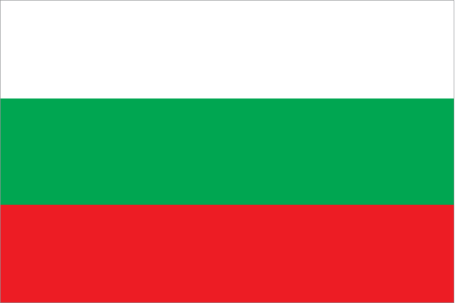

Europe :: BULGARIA
Introduction :: BULGARIA
-
The Bulgars, a Central Asian Turkic tribe, merged with the local Slavic inhabitants in the late 7th century to form the first Bulgarian state. In succeeding centuries, Bulgaria struggled with the Byzantine Empire to assert its place in the Balkans, but by the end of the 14th century the country was overrun by the Ottoman Turks. Northern Bulgaria attained autonomy in 1878 and all of Bulgaria became independent from the Ottoman Empire in 1908. Having fought on the losing side in both World Wars, Bulgaria fell within the Soviet sphere of influence and became a People's Republic in 1946. Communist domination ended in 1990, when Bulgaria held its first multiparty election since World War II and began the contentious process of moving toward political democracy and a market economy while combating inflation, unemployment, corruption, and crime. The country joined NATO in 2004 and the EU in 2007.
Geography :: BULGARIA
-
Southeastern Europe, bordering the Black Sea, between Romania and Turkey43 00 N, 25 00 EEuropetotal: 110,879 sq kmland: 108,489 sq kmwater: 2,390 sq kmcountry comparison to the world: 105slightly larger than Tennesseetotal: 1,806 kmborder countries (5): Greece 472 km, Macedonia 162 km, Romania 605 km, Serbia 344 km, Turkey 223 km354 kmterritorial sea: 12 nmcontiguous zone: 24 nmexclusive economic zone: 200 nmtemperate; cold, damp winters; hot, dry summersmostly mountains with lowlands in north and southeastmean elevation: 472 melevation extremes: lowest point: Black Sea 0 mhighest point: Musala 2,925 mbauxite, copper, lead, zinc, coal, timber, arable landagricultural land: 46.9%arable land 29.9%; permanent crops 1.5%; permanent pasture 15.5%forest: 36.7%other: 16.4% (2011 est.)1,020 sq km (2012)a fairly even distribution throughout most of the country, with urban areas attracting larger populationsearthquakes; landslidesair pollution from industrial emissions; rivers polluted from raw sewage, heavy metals, detergents; deforestation; forest damage from air pollution and resulting acid rain; soil contamination from heavy metals from metallurgical plants and industrial wastesparty to: Air Pollution, Air Pollution-Nitrogen Oxides, Air Pollution-Persistent Organic Pollutants, Air Pollution-Sulfur 85, Air Pollution-Sulfur 94, Air Pollution-Volatile Organic Compounds, Antarctic-Environmental Protocol, Antarctic-Marine Living Resources, Antarctic Treaty, Biodiversity, Climate Change, Climate Change-Kyoto Protocol, Desertification, Endangered Species, Environmental Modification, Hazardous Wastes, Law of the Sea, Marine Dumping, Ozone Layer Protection, Ship Pollution, Wetlandssigned, but not ratified: none of the selected agreementsstrategic location near Turkish Straits; controls key land routes from Europe to Middle East and Asia
People and Society :: BULGARIA
-
7,144,653 (July 2016 est.)country comparison to the world: 102noun: Bulgarian(s)adjective: BulgarianBulgarian 76.9%, Turkish 8%, Roma 4.4%, other 0.7% (including Russian, Armenian, and Vlach), other (unknown) 10% (2011 est.)Bulgarian (official) 76.8%, Turkish 8.2%, Roma 3.8%, other 0.7%, unspecified 10.5% (2011 est.)Eastern Orthodox 59.4%, Muslim 7.8%, other (including Catholic, Protestant, Armenian Apostolic Orthodox, and Jewish) 1.7%, none 3.7%, unspecified 27.4% (2011 est.)0-14 years: 14.54% (male 535,131/female 503,540)15-24 years: 9.73% (male 362,805/female 332,358)25-54 years: 43.33% (male 1,589,183/female 1,506,285)55-64 years: 13.38% (male 447,865/female 507,805)65 years and over: 19.03% (male 552,217/female 807,464) (2016 est.)total dependency ratio: 51.9%youth dependency ratio: 21.5%elderly dependency ratio: 30.4%potential support ratio: 3.3% (2015 est.)total: 42.4 yearsmale: 40.6 yearsfemale: 44.5 years (2016 est.)country comparison to the world: 24-0.6% (2016 est.)country comparison to the world: 2298.8 births/1,000 population (2016 est.)country comparison to the world: 21214.5 deaths/1,000 population (2016 est.)country comparison to the world: 2-0.3 migrant(s)/1,000 population (2016 est.)country comparison to the world: 120a fairly even distribution throughout most of the country, with urban areas attracting larger populationsurban population: 73.9% of total population (2015)rate of urbanization: -0.31% annual rate of change (2010-15 est.)SOFIA (capital) 1.226 million (2015)at birth: 1.06 male(s)/female0-14 years: 1.06 male(s)/female15-24 years: 1.09 male(s)/female25-54 years: 1.06 male(s)/female55-64 years: 0.88 male(s)/female65 years and over: 0.69 male(s)/femaletotal population: 0.95 male(s)/female (2016 est.)26.5 (2013 est.)11 deaths/100,000 live births (2015 est.)country comparison to the world: 152total: 8.5 deaths/1,000 live birthsmale: 9.6 deaths/1,000 live birthsfemale: 7.4 deaths/1,000 live births (2016 est.)country comparison to the world: 149total population: 74.5 yearsmale: 71.2 yearsfemale: 78 years (2016 est.)country comparison to the world: 1211.46 children born/woman (2016 est.)country comparison to the world: 20369.2%note: percent of women age 20-49 (2007)8.4% of GDP (2014)country comparison to the world: 713.87 physicians/1,000 population (2012)6.4 beds/1,000 population (2011)improved:urban: 99.6% of populationrural: 99% of populationtotal: 99.4% of populationunimproved:urban: 0.4% of populationrural: 1% of populationtotal: 0.6% of population (2015 est.)improved:urban: 86.8% of populationrural: 83.7% of populationtotal: 86% of populationunimproved:urban: 13.2% of populationrural: 16.3% of populationtotal: 14% of population (2015 est.)NANANA25.6% (2014)country comparison to the world: 723.5% of GDP (2012)country comparison to the world: 108definition: age 15 and over can read and writetotal population: 98.4%male: 98.7%female: 98.1% (2015 est.)total: 15 yearsmale: 15 yearsfemale: 15 years (2014)total: 23.8%male: 23.8%female: 23.7% (2014 est.)country comparison to the world: 30
Government :: BULGARIA
-
conventional long form: Republic of Bulgariaconventional short form: Bulgarialocal long form: Republika Bulgarialocal short form: Bulgariaetymology: named after the Bulgar tribes who settled the lower Balkan region in the 7th century A.D.parliamentary republicname: Sofiageographic coordinates: 42 41 N, 23 19 Etime difference: UTC+2 (7 hours ahead of Washington, DC, during Standard Time)daylight saving time: +1hr, begins last Sunday in March; ends last Sunday in October28 provinces (oblasti, singular - oblast); Blagoevgrad, Burgas, Dobrich, Gabrovo, Haskovo, Kardzhali, Kyustendil, Lovech, Montana, Pazardzhik, Pernik, Pleven, Plovdiv, Razgrad, Ruse, Shumen, Silistra, Sliven, Smolyan, Sofia, Sofia-Grad (Sofia City), Stara Zagora, Targovishte, Varna, Veliko Tarnovo, Vidin, Vratsa, Yambol3 March 1878 (as an autonomous principality within the Ottoman Empire); 22 September 1908 (complete independence from the Ottoman Empire)Liberation Day, 3 March (1878)several previous; latest drafted between late 1990 and early 1991, adopted 12 July 1991; amended several times, last in 2015 (2016)civil lawaccepts compulsory ICJ jurisdiction with reservations; accepts ICCt jurisdictioncitizenship by birth: nocitizenship by descent only: at least one parent must be a citizen of Bulgariadual citizenship recognized: yesresidency requirement for naturalization: 5 years18 years of age; universalchief of state: President Rosen PLEVNELIEV (since 22 January 2012); Vice President Margarita POPOVA (since 22 January 2012)head of government: Prime Minister Boyko BORISOV (since 7 November 2014); Deputy Prime Ministers Tomislav DONCHEV (since 7 November 2014), Rumyana BACHVAROVA (since 7 November 2014), Meglena KUNEVA (since 7 November 2014); note - this is BORISOV's second term as prime minister, he first served between 27 July 2009 and 13 March 2013cabinet: Council of Ministers nominated by the prime minister, elected by the National Assemblyelections/appointments: president and vice president elected on the same ballot by absolute majority popular vote in 2 rounds if needed for a 5-year term (eligible for a second term); election last held on 6 and 13 November 2016 (next to be held fall 2021); chairman of the Council of Ministers (prime minister) elected by the National Assembly; deputy prime ministers nominated by the prime minister, elected by the National Assemblyelection results: Rumen RADEV elected president in runoff election; percent of vote - Rumen RADEV (independent) 59.4%, Tsetska TSACHEVA (GERB) 36.2%; note - Rumen RADEV will assume office on 22 January 2017description: unicameral National Assembly or Narodno Sabranie (240 seats; members directly elected in multi-seat constituencies by proportional representation vote to serve 4-year terms)elections: last held on 5 October 2014 (next to be held in 2018)election results: percent of vote by party - GERB 32.7%, CfB 15.4%, DPS 14.8%, RB 8.9%, PF 7.3%, BBTs 5.7%, Ataka 4.5%, ABV 4.2%, other 6.5%; seats by party - GERB 84, CfB 39, DPS 38, RB 23, PF 19, BBTs 15, Ataka 11, ABV 11highest court(s): Supreme Court of Cassation (consists of a chairman and approximately 72 judges organized into penal, civil, and commercial colleges); Supreme Administrative Court (organized in 2 colleges with various panels of 5 judges each); Constitutional Court (consists of 12 justices); note - Constitutional Court resides outside the judiciaryjudge selection and term of office: Supreme Court of Cassation and Supreme Administrative judges elected by the Supreme Judicial Council or SJC (consists of 25 members with extensive legal experience) and appointed by the president; judges can serve until mandatory retirement at age 65; Constitutional Court justices elected by the National Assembly and appointed by the president and the SJC; justices appointed for 9-year terms with renewal of 4 justices every 3 yearssubordinate courts: appeals courts; regional and district courts; administrative courts; courts martialAlternative for Bulgarian Revival or ABV [Georgi PARVANOV]Attack (Ataka) [Volen Nikolov SIDEROV]Bulgarian Socialist Party or BSP [Mihail MIKOV]Bulgaria of the Citizens or DBG [Meglena KUNEVA]Bulgaria Without Censorship or BBTs [Nikolay BAREKOV]Citizens for the European Development of Bulgaria or GERB [Boyko BORISOV]Coalition for Bulgaria or CfB [Mikhail MIKOV] (coalition dominated by BSP)Democrats for a Strong Bulgaria or DSB [Radan KANEV]IMRO - Bulgarian National Movement or IMRO-BNM [Krasimir KARAKACHANOV]Movement for Rights and Freedoms or DPS [Lyutvi MESTAN]National Front for the Salvation of Bulgaria or NFSB [Valeri SIMEONOV]National Movement for Stability and Progress or NDSV [Hristina HRISTOVA] (formerly National Movement Simeon II or NMS2)United Patriots Front (alliance of IMRO-BNM, NFSB, and Attack)Union of Democratic Forces or SDS [Bozhidar LUKARSKI]Reformist Bloc or RB (a five-party alliance including the DSB, DBG, and SDS)Confederation of Independent Trade Unions of Bulgaria or CITUBPodkrepa Labor Confederationother: numerous regional, ethnic, and national interest groups with various agendasAustralia Group, BIS, BSEC, CD, CE, CEI, CERN, EAPC, EBRD, ECB, EIB, EU, FAO, G- 9, IAEA, IBRD, ICAO, ICC (national committees), ICCt, ICRM, IDA, IFC, IFRCS, IHO (pending member), ILO, IMF, IMO, IMSO, Interpol, IOC, IOM, IPU, ISO, ITU, ITUC (NGOs), MIGA, NATO, NSG, OAS (observer), OIF, OPCW, OSCE, PCA, SELEC, UN, UNCTAD, UNESCO, UNHCR, UNIDO, UNMIL, UNWTO, UPU, WCO, WFTU (NGOs), WHO, WIPO, WMO, WTO, ZCchief of mission: Ambassador Tihomir Anguelov STOYTCHEV (since 27 June 2016)chancery: 1621 22nd Street NW, Washington, DC 20008telephone: [1] (202) 387-0174FAX: [1] (202) 234-7973consulate(s) general: Chicago, Los Angeles, New Yorkchief of mission: Ambassador Eric RUBIN (since February 2016)embassy: 16 Kozyak Street, Sofia 1408mailing address: American Embassy Sofia, US Department of State, 5740 Sofia Place, Washington, DC 20521-5740telephone: [359] (2) 937-5100FAX: [359] (2) 937-5320three equal horizontal bands of white (top), green, and red; the pan-Slavic white-blue-red colors were modified by substituting a green band (representing freedom) for the bluenote: the national emblem, formerly on the hoist side of the white stripe, has been removedlion; national colors: white, green, redname: "Mila Rodino" (Dear Homeland)lyrics/music: Tsvetan Tsvetkov RADOSLAVOVnote: adopted 1964; composed in 1885 by a student en route to fight in the Serbo-Bulgarian War
Economy :: BULGARIA
-
Bulgaria, a former communist country that entered the EU on 1 January 2007, averaged more than 6% annual growth from 2004 to 2008, driven by significant amounts of bank lending, consumption, and foreign direct investment.Successive governments have demonstrated a commitment to economic reforms and responsible fiscal planning, but the global downturn sharply reduced domestic demand, exports, capital inflows, and industrial production. GDP contracted by 5.5% in 2009, and has been slow to recover in the years since.Despite a favorable investment regime, including low, flat corporate income taxes, significant challenges remain. Corruption in public administration, a weak judiciary, and the presence of organized crime continue to hamper the country's investment climate and economic prospects.$133.9 billion (2015 est.)$130.3 billion (2014 est.)$128.2 billion (2013 est.)note: data are in 2015 US dollarscountry comparison to the world: 77$47.17 billion (2015 est.)3% (2015 est.)1.5% (2014 est.)1.3% (2013 est.)country comparison to the world: 104$19,100 (2015 est.)$18,500 (2014 est.)$18,100 (2013 est.)note: data are in 2015 US dollarscountry comparison to the world: 8922.7% of GDP (2015 est.)22.3% of GDP (2014 est.)22.7% of GDP (2013 est.)country comparison to the world: 67household consumption: 60.9%government consumption: 16.3%investment in fixed capital: 21.2%investment in inventories: 0.2%exports of goods and services: 66.5%imports of goods and services: -65% (2015 est.)agriculture: 5.1%industry: 27.6%services: 67.2% (2015 est.)vegetables, fruits, tobacco, wine, wheat, barley, sunflowers, sugar beets; livestockelectricity, gas, water; food, beverages, tobacco; machinery and equipment, base metals, chemical products, coke, refined petroleum, nuclear fuel2.7% (2015 est.)country comparison to the world: 822.552 millionnote: number of employed persons (2015 est.)country comparison to the world: 113agriculture: 7%industry: 30.1%services: 62.9% (2014)10.1% (2015 est.)11.2% (2014 est.)country comparison to the world: 11721.8% (2014 est.)lowest 10%: 2%highest 10%: 35.2% (2007)35.4 (2013)31.2 (2005)country comparison to the world: 91revenues: $18.25 billionexpenditures: $19.12 billion (2015 est.)38.7% of GDP (2015 est.)country comparison to the world: 47-1.8% of GDP (2015 est.)country comparison to the world: 8126.7% of GDP (2015 est.)27% of GDP (2014 est.)note:: defined by the EU's Maastricht Treaty as consolidated general government gross debt at nominal value, outstanding at the end of the year in the following categories of government liabilities: currency and deposits, securities other than shares excluding financial derivatives, and loans; general government sector comprises the subsectors: central government, state government, local government, and social security fundscountry comparison to the world: 148calendar year-0.1% (2015 est.)-1.4% (2014 est.)country comparison to the world: 100.01% (31 December 2015)0.03% (31 December 2014)note: Bulgarian National Bank (BNB) has had no independent monetary policy since the introduction of the Currency Board regime in 1997; this is BNB's base interest ratecountry comparison to the world: 1557.48% (31 December 2015 est.)8.28% (31 December 2014 est.)country comparison to the world: 111$20.09 billion (31 December 2015 est.)$19.34 billion (31 December 2014 est.)country comparison to the world: 65$41.32 billion (31 December 2015 est.)$37.99 billion (31 December 2014 est.)country comparison to the world: 73$29.83 billion (31 December 2015 est.)$32.47 billion (31 December 2014 est.)country comparison to the world: 76$4.797 billion (31 December 2015 est.)$5.45 billion (31 December 2014 est.)$6.666 billion (31 December 2012 est.)country comparison to the world: 84$1.043 billion (2015 est.)$658 million (2014 est.)country comparison to the world: 43$24.62 billion (2015 est.)$27.94 billion (2014 est.)country comparison to the world: 67clothing, footwear, iron and steel, machinery and equipment, fuelsGermany 12.5%, Italy 9.2%, Turkey 8.5%, Romania 8.2%, Greece 6.5%, France 4.2% (2015)$26.74 billion (2015 est.)$31.63 billion (2014 est.)country comparison to the world: 68machinery and equipment; metals and ores; chemicals and plastics; fuels, minerals, and raw materialsGermany 12.9%, Russia 12%, Italy 7.6%, Romania 6.8%, Turkey 5.7%, Greece 4.8%, Spain 4.8% (2015)$22.09 billion (31 December 2015 est.)$20.11 billion (31 December 2014 est.)country comparison to the world: 57$42.5 billion (31 December 2015 est.)$48.74 billion (31 December 2014 est.)country comparison to the world: 66$44.29 billion (31 December 2015 est.)$51.78 billion (31 December 2014 est.)country comparison to the world: 59$4.49 billion (31 December 2015 est.)$5.354 billion (31 December 2014 est.)country comparison to the world: 70leva (BGN) per US dollar -1.7644 (2015 est.)1.4742 (2014 est.)1.4742 (2013 est.)1.52 (2012 est.)1.4053 (2011 est.)
Energy :: BULGARIA
-
electrification - total population: 100% (2016)44 billion kWh (2014 est.)country comparison to the world: 5531 billion kWh (2014 est.)country comparison to the world: 5714.7 billion kWh (2015 est.)country comparison to the world: 144.3 billion kWh (2014 est.)country comparison to the world: 4511.84 million kW (2014 est.)country comparison to the world: 5241.7% of total installed capacity (2014 est.)country comparison to the world: 16416.9% of total installed capacity (2014 est.)country comparison to the world: 118.5% of total installed capacity (2014 est.)country comparison to the world: 11932.9% of total installed capacity (2014 est.)country comparison to the world: 41,000 bbl/day (2015 est.)country comparison to the world: 930 bbl/day (2013 est.)country comparison to the world: 105129,300 bbl/day (2013 est.)country comparison to the world: 4015 million bbl (1 January 2016 es)country comparison to the world: 86139,100 bbl/day (2013 est.)country comparison to the world: 6584,000 bbl/day (2014 est.)country comparison to the world: 7992,350 bbl/day (2013 est.)country comparison to the world: 4741,320 bbl/day (2013 est.)country comparison to the world: 88180 million cu m (2014 est.)country comparison to the world: 782.86 billion cu m (2014 est.)country comparison to the world: 770 cu m (2013 est.)country comparison to the world: 712.725 billion cu m (2014 est.)country comparison to the world: 455.663 billion cu m (1 January 2016 es)country comparison to the world: 9243.61 million Mt (2014 est.)country comparison to the world: 65
Communications :: BULGARIA
-
total subscriptions: 1,654,535subscriptions per 100 inhabitants: 23 (July 2015 est.)country comparison to the world: 64total: 9.195 millionsubscriptions per 100 inhabitants: 128 (July 2015 est.)country comparison to the world: 87general assessment: inherited an extensive but antiquated telecommunications network from the Soviet era; quality has improved with a modern digital trunk line now connecting switching centers in most of the regions; remaining areas are connected by digital microwave radio relaydomestic: the Bulgaria Telecommunications Company's fixed-line monopoly terminated in 2005 in an effort to upgrade fixed-line services; mobile-cellular teledensity, fostered by multiple service providers, is over 125 telephones per 100 personsinternational: country code - 359; submarine cable provides connectivity to Ukraine and Russia; a combination submarine cable and land fiber-optic system provides connectivity to Italy, Albania, and Macedonia; satellite earth stations - 3 (1 Intersputnik in the Atlantic Ocean region, 2 Intelsat in the Atlantic and Indian Ocean regions) (2015)4 national terrestrial TV stations with 1 state-owned and 3 privately owned; a vast array of TV stations are available from cable and satellite TV providers; state-owned national radio broadcasts over 3 networks; large number of private radio stations broadcasting, especially in urban areas (2010).bgtotal: 4.072 millionpercent of population: 56.7% (July 2015 est.)country comparison to the world: 75
Transportation :: BULGARIA
-
number of registered air carriers: 8inventory of registered aircraft operated by air carriers: 44annual passenger traffic on registered air carriers: 1,118,689annual freight traffic on registered air carriers: 1,583,340 mt-km (2015)LZ (2016)68 (2013)country comparison to the world: 73total: 57over 3,047 m: 22,438 to 3,047 m: 171,524 to 2,437 m: 12under 914 m: 26 (2013)total: 11914 to 1,523 m: 2under 914 m: 9 (2013)1 (2013)gas 2,887 km; oil 346 km; refined products 378 km (2013)total: 5,114 kmstandard gauge: 4,989 km 1.435-m gauge (2,880 km electrified)narrow gauge: 125 km 0.760-m gauge (2014)country comparison to the world: 36total: 19,512 kmpaved: 19,235 km (includes 458 km of expressways)unpaved: 277 kmnote: does not include Category IV local roads (2011)country comparison to the world: 111470 km (2009)country comparison to the world: 83total: 22by type: bulk carrier 9, cargo 8, liquefied gas 2, petroleum tanker 1, roll on/roll off 2foreign-owned: 14 (Germany 12, Russia 2)registered in other countries: 30 (Belize 1, Comoros 4, Georgia 1, Malta 8, Moldova 1, Panama 6, Saint Vincent and the Grenadines 9) (2010)country comparison to the world: 93major seaport(s): Burgas, Varna (Black Sea)
Military and Security :: BULGARIA
-
Bulgarian Armed Forces: Ground Forces, Naval Forces, Bulgarian Air Forces (Bulgarski Voennovazdyshni Sily, BVVS) (2011)18-27 years of age for voluntary military service; conscription ended in January 2008; service obligation 6-9 months (2012)1.2% of GDP (2015)1.6% of GDP (2013)1.46% of GDP (2012)1.55% of GDP (2011)1.46% of GDP (2010)country comparison to the world: 66
Transnational Issues :: BULGARIA
-
nonerefugees (country of origin): 13,819 (Syria) (2015)stateless persons: 67 (2015)note: 46,032 estimated refugee and migrant arrivals (2015 - November 2016)current situation: Bulgaria is a source and, to a lesser extent, a transit and destination country for men, women, and children subjected to sex trafficking and forced labor; Bulgaria is one of the main sources of human trafficking in the EU; women and children are increasingly sex trafficked domestically, as well as in Europe, Russia, the Middle East, and the US; adults and children become forced laborers in agriculture, construction, and the service sector in Europe, Israel, and Zambia; Romanian girls are also subjected to sex trafficking in Bulgariatier rating: Tier 2 Watch List – Bulgaria does not fully comply with the minimum standards for the elimination of trafficking; however, it is making significant efforts to do so; in 2014, authorities prosecuted and convicted fewer traffickers and issued suspended sentences for the majority of those convicted; victim protection efforts declined and were minimal relative to the number of victims identified; funding for the state’s two NGO-operated shelters was significantly cut, forcing them to close; specialized services for child and adult male victims were non-existent; the government took action to combat trafficking-related complicity among public officials and police officers (2015)major European transshipment point for Southwest Asian heroin and, to a lesser degree, South American cocaine for the European market; limited producer of precursor chemicals; vulnerable to money laundering because of corruption, organized crime; some money laundering of drug-related proceeds through financial institutions (2008)